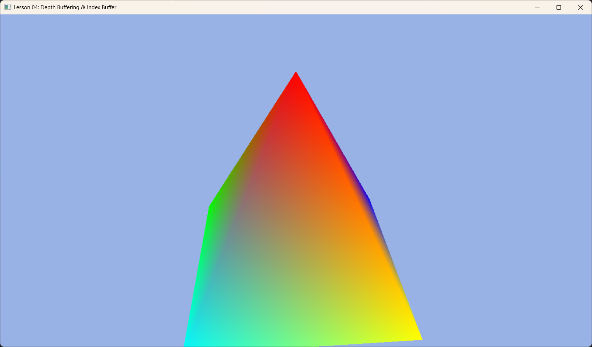

Lesson 04: Depth Buffering & Index Buffers (深度缓冲与索引缓冲)

1. Introduction (引言)
在上一节课中，我们画了一个平面的三角形。但在 3D 世界中，物体是有前有后的。 如果先画远处的物体，再画近处的物体，画面是正确的（画家算法）。但在计算机图形学中，三角形的绘制顺序是不确定的。 这就引入了 Depth Buffer (深度缓冲区)，让像素自己决定“谁该显示”。
此外，我们还将学习 Index Buffer (索引缓冲区)，这是复用顶点的关键技术，以及如何通过 Root Constants 向 Shader 传递变换矩阵。
2. Core Concepts (核心概念)
2.1 Depth Buffer (深度缓冲)
深度缓冲区是一张和屏幕一样大的“黑白图片”，每个像素记录这该点当前的深度值（0.0 代表最近，1.0 代表最远）。
* 规则: 当 GPU 想要画一个新像素时，它会检查该像素的深度值 Z_new。
* 比较: 如果 Z_new < Z_old (更近)，则画上新颜色，并更新深度值。否则，丢弃该像素。
* 结果: 无论绘制顺序如何，近处的物体总会遮挡远处的物体。
2.2 Index Buffer (索引缓冲区)
想象你要画一个正方体。它有 8 个顶点，但需要分割成 12 个三角形（每个面 2 个）。
* 如果不复用顶点，你需要 $12 \times 3 = 36$ 个顶点数据。
* 如果使用索引，你只需要存储 8 个唯一顶点。然后用一个整数列表（索引）来描述三角形：[0,1,2, 0,2,3 ...]。
* 这大大节省了显存，并提高了 Vertex Cache 命中率。
2.3 Constant Buffer vs Root Constants
物体需要旋转，就需要矩阵。矩阵是变量，怎么传给 Shader？ * Descriptor Table: 可以在堆里存海量数据（慢，容量大）。 * Root Constants: 直接把数据塞在“根签名”里（极快，容量极小）。 * 本课中，一个 4x4 矩阵只有 16 个浮点数 (64字节)，非常适合放入 Root Constants。
3. Code Implementation (代码实现)
3.1 Initializing Depth Buffer (初始化深度缓冲)
深度缓冲区也是一个纹理资源，通常在初始化 DX12 时随 SwapChain 一起创建（VibeDX12App 基类已帮我们处理）。
我们需要做的是在 PSO 中开启它。
void DepthBufferingApp::BuildPSO() {
D3D12_GRAPHICS_PIPELINE_STATE_DESC psoDesc = {};
// ... 其他设置 ...
// 1. 开启深度测试
psoDesc.DepthStencilState.DepthEnable = TRUE;
// 2. 允许写入深度 (遮挡后续的像素)
psoDesc.DepthStencilState.DepthWriteMask = D3D12_DEPTH_WRITE_MASK_ALL;
// 3. 比较规则：LESS (越小越近，越近越优先)
psoDesc.DepthStencilState.DepthFunc = D3D12_COMPARISON_FUNC_LESS;
// 4. 指定 DSV 格式 (必须与我们创建的 Depth Stencil 纹理格式匹配)
psoDesc.DSVFormat = m_depthStencilFormat; // 通常为 DXGI_FORMAT_D24_UNORM_S8_UINT
// ...
}
3.2 Root Signature with Constants (带常量的根签名)
我们需要告诉 GPU：“嘿，我会给你传 16 个浮点数（一个矩阵）”。
void DepthBufferingApp::BuildRootSignature() {
CD3DX12_ROOT_PARAMETER slotRootParameter[1];
// InitAsConstants(参数数量, Shader寄存器号)
// 16 个 float = 1 个 4x4 矩阵
// register(b0)
slotRootParameter[0].InitAsConstants(16, 0);
CD3DX12_ROOT_SIGNATURE_DESC rootSigDesc(1, slotRootParameter, 0, nullptr, D3D12_ROOT_SIGNATURE_FLAG_ALLOW_INPUT_ASSEMBLER_INPUT_LAYOUT);
// ... 序列化并创建 ...
}
3.3 Geometry with Indices (带索引的几何体)
创建一个四棱锥，共 5 个顶点。
void DepthBufferingApp::BuildGeometry() {
// 1. 定义 5 个唯一顶点
std::vector<Vertex> vertices = {
{ { 0.0f, 1.0f, 0.0f }, { 1.0f, 0.0f, 0.0f, 1.0f } }, // 0. 顶点
{ { -1.0f, -1.0f, -1.0f }, { 0.0f, 1.0f, 0.0f, 1.0f } }, // 1. 左后
{ { -1.0f, -1.0f, 1.0f }, { 0.0f, 0.0f, 1.0f, 1.0f } }, // 2. 左前
{ { 1.0f, -1.0f, 1.0f }, { 1.0f, 1.0f, 0.0f, 1.0f } }, // 3. 右前
{ { 1.0f, -1.0f, -1.0f }, { 0.0f, 1.0f, 1.0f, 1.0f } } // 4. 右后
};
// 2. 定义索引 (每3个索引组成一个三角形)
std::vector<uint16_t> indices = {
0, 2, 3, // 前面
0, 3, 4, // 右面
// ... (共 6 个三角形，18 个索引)
};
// 3. 创建并上传 Vertex Buffer (同 Lesson 03) ...
// 4. 创建并上传 Index Buffer (完全类似 Vertex Buffer)
// 略... 都是 CreateCommittedResource + Map + Copy + Unmap
// 5. 创建 Index Buffer View
m_indexBufferView.BufferLocation = m_indexBuffer->GetGPUVirtualAddress();
m_indexBufferView.Format = DXGI_FORMAT_R16_UINT; // 这里我们用了 16 位索引
m_indexBufferView.SizeInBytes = ibByteSize;
}
3.4 The Draw Call (绘制循环)
现在我们需要在渲染循环中清除深度缓冲区，并使用索引绘制。
void DepthBufferingApp::OnRender() {
// ... Reset Command List ...
// 1. 清除
auto rtvHandle = CurrentBackBufferView();
auto dsvHandle = DepthStencilView(); // 获取深度缓冲视图句柄
// 清除颜色 (背景色)
m_commandList->ClearRenderTargetView(rtvHandle, Colors::LightBlue, 0, nullptr);
// 清除深度 (重置为 1.0f)
m_commandList->ClearDepthStencilView(dsvHandle, D3D12_CLEAR_FLAG_DEPTH | D3D12_CLEAR_FLAG_STENCIL, 1.0f, 0, 0, nullptr);
// 绑定 Render Target 和 Depth Stencil Target
m_commandList->OMSetRenderTargets(1, &rtvHandle, true, &dsvHandle);
// 2. 设置几何体
m_commandList->IASetVertexBuffers(0, 1, &m_vertexBufferView);
m_commandList->IASetIndexBuffer(&m_indexBufferView); // 绑定索引
m_commandList->IASetPrimitiveTopology(D3D_PRIMITIVE_TOPOLOGY_TRIANGLELIST);
// 3. 更新并传递矩阵 (让物体转起来)
// worldViewProj 矩阵在 OnUpdate 中计算
m_commandList->SetGraphicsRoot32BitConstants(0, 16, &m_worldViewProj, 0);
// 4. 索引绘制 (DrawIndexed)
// DrawIndexedInstanced(索引数量, 实例数, ...)
m_commandList->DrawIndexedInstanced(m_indexCount, 1, 0, 0, 0);
// ... Present ...
}
总结
有了 深度缓冲，我们终于进入了真正的 3D 世界，不用担心物体的遮挡问题。 有了 索引缓冲，我们可以高效地构建复杂的几何体。 有了 Root Constants，我们可以让静态的物体动起来（旋转、缩放、位移）。
这三者是构建任何 3D 引擎的基石。